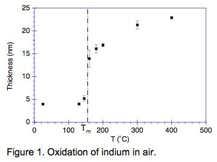
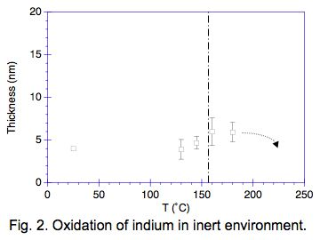

Design, Packaging and Reliability of MEMS S&A Components
- Materials Characterization
Junghyun Cho, Harry Schoeller*, Jongman Kim, and
Seungbae Park
State University of New York (SUNY), Binghamton, New York 13902-6000
(In collaboration with
Dr. M. Deeds and Dr. D. Jean at Naval Surface Warfare Center, Indian Head,
MD)
*Graduate student
Overview:
This work focused on the study of oxidation kinetics of pure indium solder in an attempt to develop a processing window for fluxless solder reflow in MEMS packaging. First, Gibbs free energy of oxidation was calculated through a thermodynamic survey. From there, the effect of moisture and oxygen on the hydrogen reducing environment was investigated to develop an ideal reflow environment.
All the oxidation experiments were performed on the electrochemically polished surface which yielded repeatable thickness measurements for ultra thin oxide layers. An electrochemical polishing approach enabled to produce an ultra smooth (<10-nm roughness) finish. Spectroscopic ellipsometer was then employed to measure the thickness of these ultra thin oxide layers. Ellipsometer is preferred because of its capability to measuring a few nm's and non-destructive nature. For thicker oxide layers, measurements were estimated using a depth profile via dynamic nanoindentation.
To
experimentally verify the theoretical thermodynamic calculations, oxide thickness
verses temperature plots were constructed. From these plots several conclusions
were drawn. First,
there is little or no oxidation when indium is heat treated below the melting
temperature (Fig.1). Second, based on the Arrhenius plot there is a sharp increase
in the activation energy after crossing the melting temperature. Third,
oxidation in controlled H2, H2O, and O2 seems
to follow thermodynamic calculations (Fig.2). A
cross-over was seen from oxidation to reduction.

Reduction of thick indium oxide layers in a hydrogen environment seemed to be more difficult. Reduction environmental conditions close to thermodynamic equilibrium point showed very slow kinetics. Because indium oxide is so stable at high temperatures it was necessary to use extreme temperatures (350°C) to see any appreciable reduction. Controlling moisture level below 1 ppm seemed to be essential.
From a kinetics standpoint it was seen that oxidation growth in air follows a logarithmic relationship. Indium solder heat treated at 145°C, 180°C, 220°C all showed this behavior which is based on the theory of electron flow from the metal to the oxide rather than diffusion of ions through the oxide lattice. Oxidation kinetics in an inert environment below the melting temperature showed little or no oxide growth, all falling within the range of the native oxide layer.
Complementing this oxidation and reduction study is a materials characterization of both indium and indium oxide. The mechanical properties, elastic modulus and hardness were measured using nanoindentation. Microstructure characterization was carried out using both optical microscope and atomic force microscope (AFM). Lastly, X-ray diffraction (XRD) was used to verify the crystal structure of indium oxide before and after the melting temperature.Support for this project is provided by Office
of Naval Research (ONR).